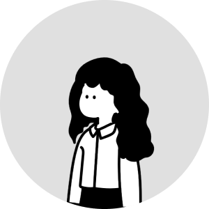

ようこそ！
About
東京を拠点に活動しているWebコーダー、高橋せしかと申します。
約5年間、Web制作会社にて、コーディングをはじめ、Webサイトデザインやディレクション、公開後の運用・保守対応（更新作業やアクセス解析等）まで幅広く担当していました。
特に HTML / CSS / JavaScript / jQuery を用いた、再現性の高い丁寧なコーディングを得意としています。
レスポンシブ対応やアニメーション実装など、デザインの魅力を引き出すサイト制作を心がけています。
縁の下の力持ちとして、保守性や更新のしやすさにも配慮しながら、細部まで丁寧に作り込むことを大切にしています。

Skills
- Front-end
- CMS
- Design
- Tools
- Learning
- HTML5
- CSS3
- JavaScript
- jQuery
- レスポンシブ対応
WordPress / PowerCMS
- 更新作業
- テンプレート調整
- カスタム投稿対応
- 既存テーマ修正
- ユーザーマニュアル作成
- Webサイトデザイン
- バナー制作
- デザインカンプ作成
- Visual Studio Code
- Figma
- Adobe Dreamweaver
- Adobe Illustrator
- Adobe Photoshop
- Adobe InDesign
- Git
- Google Analytics
- WordPress構築
- TypeScript
- Vue.js
- Blender
（トップのゼリーはBlenderで作成したものです！） - 動画編集
Works
コーディングやアニメーション実装、デザイン制作のスキルを活かして制作した作品を掲載しています。